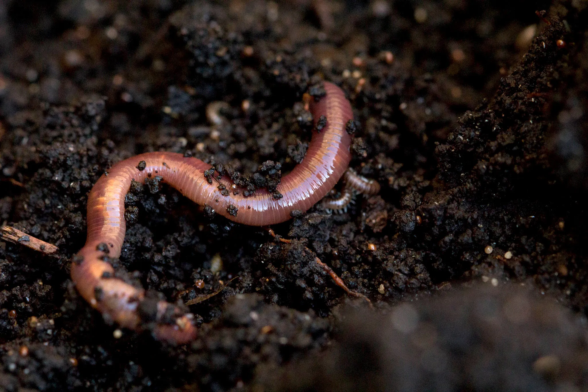
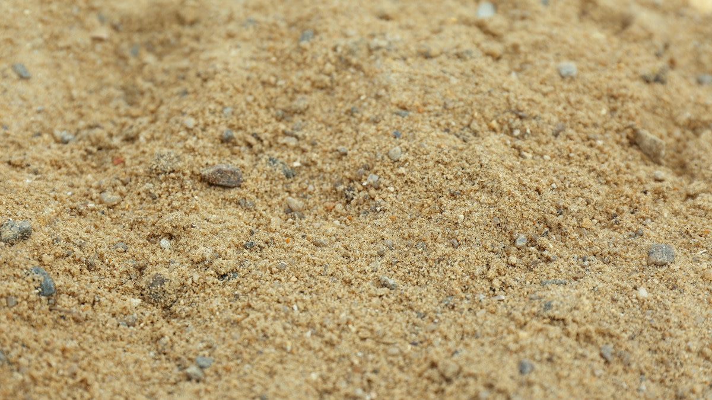
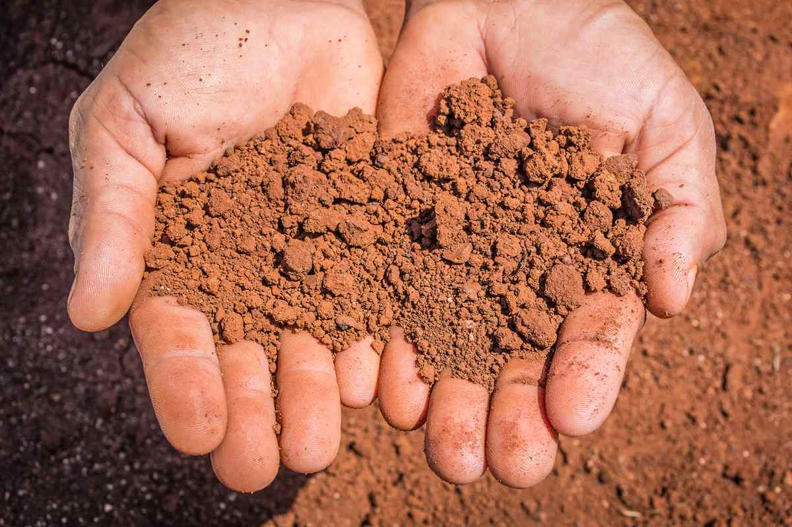

Why Is Soil Important?
The Role of Organic Matter
- Water retention: Organic matter improves the soil's ability to absorb and retain water.
- Nutrient retention: Organic matter helps hold nutrients in the soil.
- Structure and stability: Organic matter helps soil particles form stable aggregates.
- Cation exchange: Organic matter helps retain positively charged nutrients and increases the soil's ability to buffer changes in pH.
The Role of Soil Organisms
Soil organisms contribute to natural, or biological, tillage. Earthworm tunnels provide aeration and drainage, while their excretions help bind soil particles into aggregates.

Soil Particles and Textures
Soil texture is the relative proportion of sand, silt, and clay particles in a soil.
Sand
- Forms through physical weathering
- Composed largely of silica-rich minerals
- Has relatively large particles
- Has a small surface area relative to its volume
- Creates large pore spaces
- Retains relatively little water and nutrients

Silt
- Forms through physical weathering
- Can originate from feldspar and quartz
- Has medium-sized particles
- Can become compacted
- Has limited nutrient retention compared with clay
Clay
- Forms through chemical weathering of silicate rocks
- Has very small particles
- Often forms flat, negatively charged sheets
- Has high nutrient-retention capacity
- Can drain poorly

Soil Texture Classes
Different combinations of sand, silt, and clay produce the following texture classes:
- Sand
- Loamy sand
- Sandy loam
- Sandy clay loam
- Loam
- Sandy clay
- Silt loam
- Silt
- Clay loam
- Silty clay loam
- Silty clay
- Clay
Soil Layers and Humus
- Topsoil
- The upper soil layer, typically richer in humus and containing mineral particles.
- Subsoil
- The layer below topsoil, typically containing less humus and a greater proportion of mineral material.
- Humus
- Decomposed organic matter that contributes to soil structure.
Tillage on Organic Farms
Major Impacts of Tillage
- Can damage soil structure
- Can disturb or harm soil organisms
- Can reduce soil organic matter
- Can bring dormant weed seeds from deeper layers to the surface
Why Does Soil Inversion Matter?
Bacteria, fungi, and earthworms occupy different depths where moisture and aeration conditions suit them. Turning the soil upside down disrupts these conditions and the organisms that help maintain soil structure.
Soil inversion can also bring buried weed seeds to the surface, where conditions may allow them to germinate.
Reducing the Impacts of Tillage
- Biological tillage
- Rely on soil organisms and roots to improve soil structure and aeration where possible, reducing the need for mechanical tillage.
- Permanent raised beds
- Improve drainage and limit compaction by keeping foot traffic and machinery off the growing beds.
- Tarps
- Use tarps to suppress weeds and reduce the need for repeated soil disturbance.
- Timing
- [Confirm and add guidance on tillage timing, soil moisture, and soil-organism activity.]
- Lower-disturbance tools
- Use a broadfork to loosen and aerate soil without turning it over. A rotary power harrow can mix the surface layer with less inversion than some other tillage equipment.
A Lower-Disturbance Bed Preparation Process
-
Shred Crop Residues
Shred green manures and crop residues with a flail mower.
-
Cover the Bed
Cover the bed with a black tarp for two to three weeks to smother the previous crop and suppress weeds.
-
Aerate with a Broadfork
Use a broadfork to deeply aerate the soil and encourage root development in the next vegetable crop.
-
Add and Incorporate Amendments
Spread amendments over the bed and mix them into the surface with a rotary harrow to a depth of [add depth] inches.
The roller at the back of the harrow firms and levels the bed.
-
Rake and Prepare for Planting
Remove remaining debris and stones with a final raking. The bed is then ready for the next crop.
Sources and Supporting Materials
- Lecture 3
- The Market Gardener Chapters 5 & 6 p. 41-79